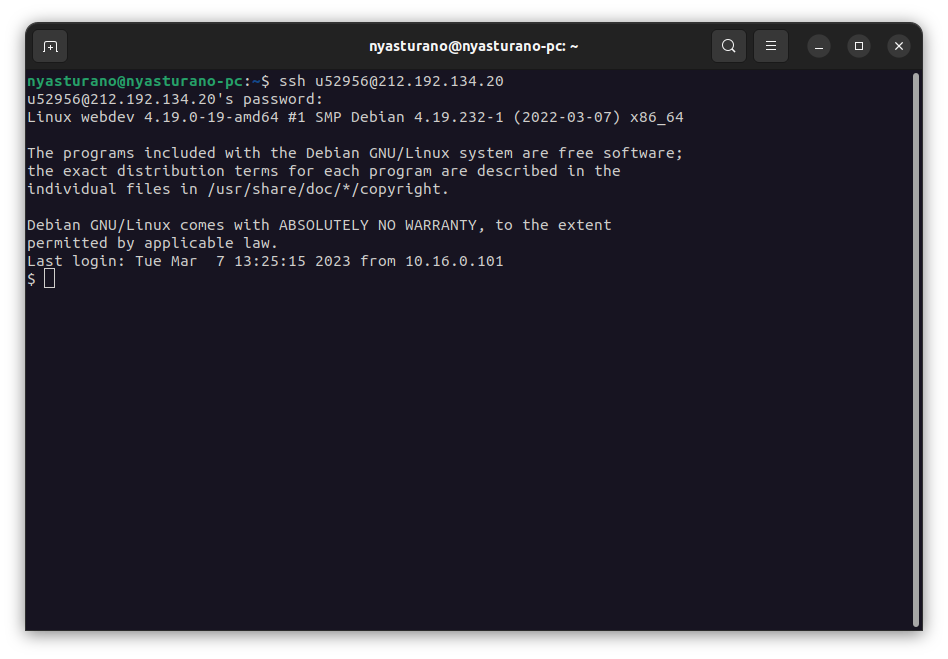
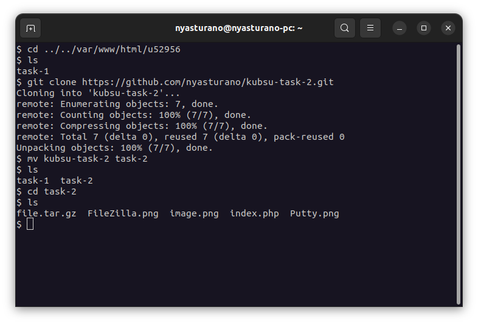
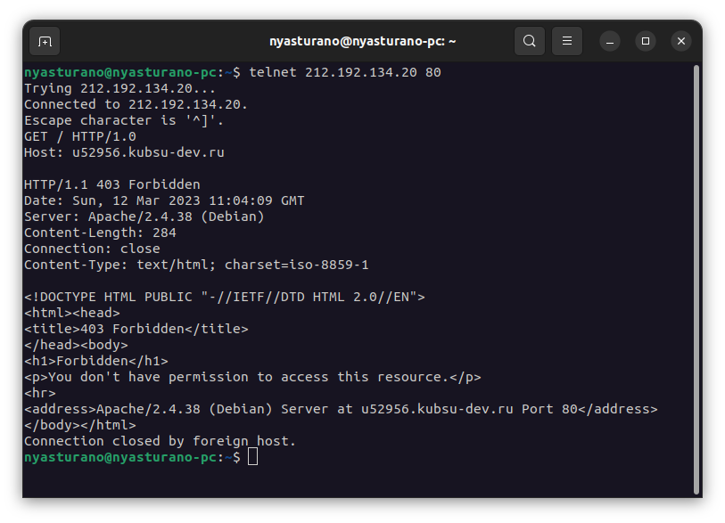
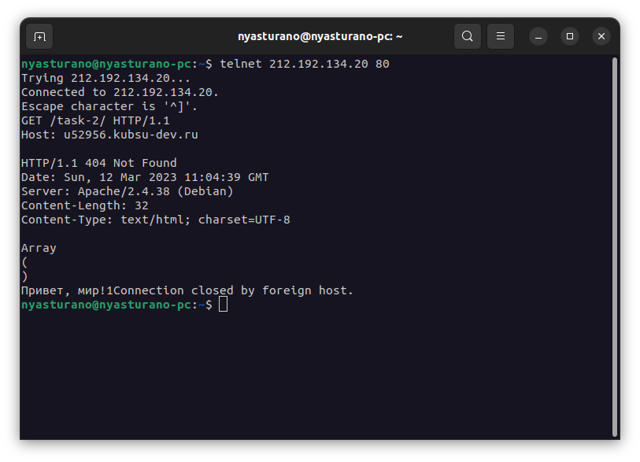
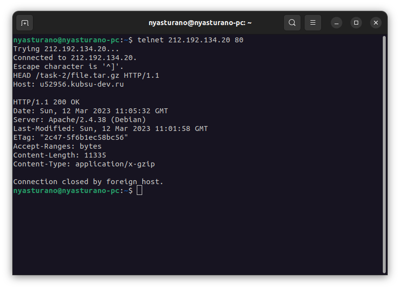
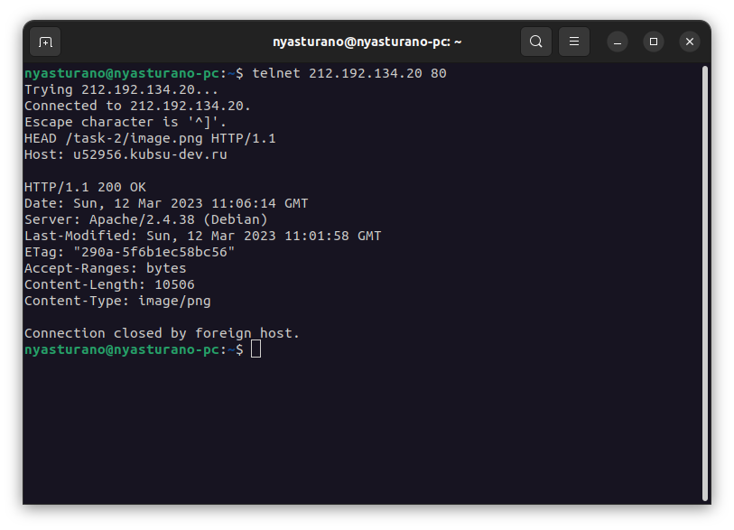
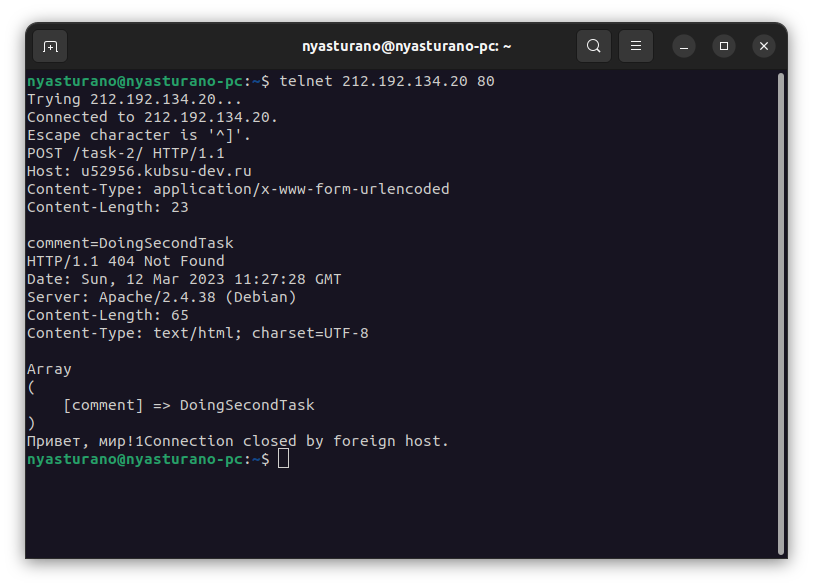
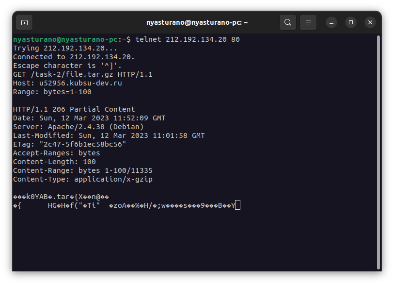
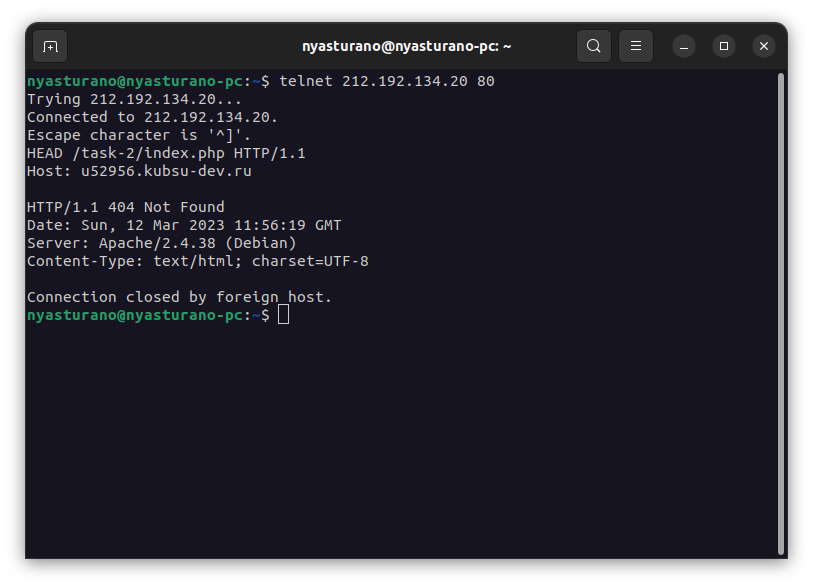

Подключение к удаленному серверу через протокол ssh с помощью терминала

Клонирование репозитория с файлами необходимыми для задания

С помощью GET-запроса получили главную страницу

С помощью GET-запроса получили внутреннюю страницу (index.php)

С помощью HEAD-запроса определили размер файла, не скачивая его. Размер файла file.tar.gz = 11335,
эта информация находится в заголовке Content-Length.

С помощью HEAD-запроса определили медиатип ресурса image.png. Эта информация находится в заголовке Content-Type: image/png.

С помощью POST-запроса отправили на сервер комментарий. Для этого необходимо было указать заголовок
Content-Type: application/x-www-form-urlencoded и посчитать длину тела запроса в байтах, чтобы указать
Content-Length.

С помощью GET-запроса поулчили первые 100 байт файла file.tar.gz. Для этого использовали заголовок Range,
в котором указали байты из какого диапазона мы хотим получить, в нашем случае: 1-100.

С помощью HEAD-запроса определили кодировку ресурса index.php. Это отражено в заголовке Content-Type (charset=UTF-8)